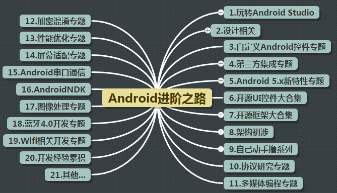
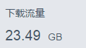

Introducción:
Empecé a escribir este tutorial a finales de junio. Después de casi cinco meses, hoy por fin lo he terminado. El cuerpo principal del tutorial completo consta de 148 artículos en diez grandes capítulos, desde los controles básicos de interfaz de usuario hasta los cuatro componentes principales, Intent, Fragment, manejo de eventos, almacenamiento de datos, programación de redes, dibujo y animación, multimedia, servicios del sistema, etc., ¡todo explicado en detalle! Todo el código está escrito en Android Studio, el texto completo usa Markdown, con una estructura de redacción clara, y también se analizan algunos problemas comunes encontrados en el desarrollo real... Debido a las limitaciones de mi capacidad personal, aunque me esforcé al máximo, es inevitable que haya algunos errores y omisiones; espero que los lectores sean indulgentes y los señalen, ¡estaré infinitamente agradecido! Durante el proceso de escribir este material, he sentido muchas cosas; aprovecho esta última sección de cierre para desahogarme, y también sirve como una despedida temporal a mi carrera de bloguero...¡Desahogarme de una vez!
1. El origen de este tutorial
Recuerdo que fue una noche de mayo, acababa de jugar al League of Legends (LOL) con mis compañeros de habitación y estaba jugando con el móvil. Sin darme cuenta, seguí la cuenta pública de W3C Bird's Nest (w3c鸟巢), y luego vi un artículo que me enviaron; me pareció interesante, así que busqué «W3C Bird's Nest» en Baidu. Descubrí que había un sitio llamado Tutorial para novatos (Runoob), y la mayoría de los tutoriales que había eran de fundamentos web, pero vi un tutorial para dispositivos móviles que decía «¡Aprende Android!». Un tutorial así, como alguien que trabaja con Android, según la lógica de la historia, definitivamente habría hecho clic en el enlace inmediatamente, y luego habría pasado algo, ¿no?... Sin embargo, no hice clic... Así que la historia termina aquí, jaja... Por supuesto, al final sí hice clic, pero durante ese tiempo solo bajé con mi compañero de habitación a tomar un tazón de sopa de azúcar~ Como ha pasado mucho tiempo, ya he olvidado el contenido del tutorial, pero todavía recuerdo que en el fondo de mi armario hay un ejemplar de «Android Crazy Lecture» (《Android疯狂讲义》), el primer libro de programación que compré en la universidad, jaja. Lástima que después de leer unas 100 páginas ya lo abandoné; era como un documento de API en chino... Fue precisamente por este libro que surgió la columna «El camino de entrada a Android del Cerdito» (小猪Android入门之路). En ese momento, con actitud de probar, agregué el WeChat de la hermana mayor (大师姐) de W3C, y le pregunté si necesitaban a alguien que escribiera un tutorial básico de Android. Luego le envié el enlace del camino de entrada del Cerdito, y la hermana mayor parecía muy contenta, y luego preguntó si vendía los derechos de autor y esas cosas.Vender los derechos de autor? ¿Eso no significaba que recibiría dinero? Como un pobre y sufrido estudiante, la idea de que escribir algo me diera dinero me emocionaba un poco al pensar en ello. El resultado fue que estuve emocionado toda la noche, con muchas cosas en la cabeza... Más tarde, no sé en qué estaba pensando, hablé con FK (el administrador del sitio W3C Bird's Nest), y luego decidí escribir un tutorial básico de Android en el Tutorial para novatos de W3C Bird's Nest,Gratis, sí, así es, sin cobrar ni un centavo, con la condición de que el tutorial no se use con fines comerciales. La razón puede ser que me contagié del espíritu de compartir de FK, o quizás realmente quería escribir un tutorial de Android; la mayoría de los grandes expertos no tienen tiempo o desdeñan escribir tutoriales básicos de introducción, ¡entonces dejen que este novato los escriba! Al menos allanaré el camino para los principiantes que vengan después~
A continuación, usé Baidu Brain Map (百度脑图) para planificar el contenido que se explicaría en la serie de introducción, aprendí un poco de sintaxis de Markdown, y luego me puse a ello. Al principio no quería escribirlo en coder-pig, después de todo había muchos tutoriales abandonados a medias allí. Entonces creé una cuenta secundaria y planeé escribir este nuevo tutorial en ella, pero el número de visitas era horrible. Si eres alguien que escribe un blog y ves que lo que has tardado mucho tiempo en escribir no lo lee nadie, seguro que te sientes mal, ¿verdad?... Más tarde, en silencio, lo volví a mover a coder-pig, terminé el primer capítulo y también empecé a publicarlo en W3C Bird's Nest. A partir de entonces, cada día comenzaba este tipo devida monótona y aburrida sin cambios: Todos los días en el trabajo, en cuanto tenía tiempo, pensaba en qué conocimientos escribir hoy y qué ejemplo interesante poner. Luego, después de salir del trabajo a las 5:30 p. m., iba a comer y volvía para escribir concentrado. Básicamente, todas las noches yo era el último en cerrar la puerta; normalmente me iba alrededor de las 10:30. Recuerdo que la vez más tarde, me emocioné tanto escribiendo que no miré la hora y escribí hasta las 12:30. Cuando terminé y miré la hora, ¡hostia, las 12:30!
Asustado, recogí mis cosas rápidamente y salí corriendo, porque en el parque tecnológico parece que la puerta trasera se cierra a las 12. Cuando llegué, vi que la puerta estaba cerrada y mi corazón se hundió en gran parte. Maldita sea, ¿acaso tendría que dormir en la empresa esta noche?... Más tarde, al acercarme, vi que la puerta estaba entreabierta, no estaba cerrada con llave, y finalmente pude volver al dormitorio sin problemas... Los fines de semana normalmente tampoco tenía planes; volvía a la empresa a escribir código. De vez en cuando, si hacía buen tiempo, jugaba al bádminton con otros, pero la mayor parte del tiempo la pasaba escribiendo. Así persistí durante más de cinco meses y, por fin, este tutorial se ha completado~
Mi estado de ánimo en este momento es de un poco de alegría y un poco de emoción, pero más que nada es una liberación; por fin he terminado de escribir~~~ ¿Por qué una liberación? No tengan prisa, déjenme explicarlo con calma...
2. Hablemos un poco sobre mi situación
No hace falta que pregunten en el grupo dónde trabaja el Dios Cerdo (猪神), cuánto gana al mes, o si me acepta como aprendiz, etc. Ahora les contaré un poco sobre mi situación. Soy graduado de este año (promoción de 2015), de la Escuela de Zhuhai del Instituto de Tecnología de Beijing (北理珠). Actualmente trabajo en el Parque de Software del Sur (南方软件园), y soy unpasante de Android, y mi salario mensual es solo de3K, ¡sin nada de los cinco seguros y un fondo de vivienda (五险一金)! Sí, no lo han leído mal, soy unpasante de 3K, quizás piensen que estoy bromeando, pero es la realidad. Por mi terquedad durante la universidad, todavía tengo dos asignaturas sin aprobar: Matemáticas avanzadas I y II, así que aún no he obtenido el diploma de graduación... Muy decepcionante, ¿verdad? Pensaban que quien escribió este material era algún gran experto, ¿y resulta que es un pasante? Jaja~
Bueno, hablemos de mi nivel técnico actual en Android:
Medio-bajo, o quizás ni siquiera llego a medio-bajo; puedo completar proyectos pequeños de forma independiente. Pero en cuanto a arquitectura y cosas así, es una mierda; ni siquiera pienso en la reutilización; se podría decir que es basura ensamblada al azar. Muchas tecnologías emergentes, he oído hablar de ellas pero no he dedicado tiempo a investigarlas...
Luego hablemos de miexperiencia laboral:
2015.2
En la feria de reclutamiento de primavera de la escuela, encontré mi primera pasantía, en la Zona Industrial Transfronteriza de Gongbei (拱北跨境工业区). Era una empresa de subcontratación (outsourcing); más que una empresa, era como un estudio. En total éramos solo 7 personas, y luego hasta el de recursos humanos se fue. Estuve en esta empresa algo más de un mes, y lo que gané fue: aprendí a consultar los documentos oficiales de API, en lugar de empollar el libro de Li Gang; aprendí a modificar el archivo Hosts; conocí el uso de Fragment; escribí la interfaz de usuario de Andy World Club (华仔天地, la APP del club de fans de Andy Lau); hice todo tipo de tareas menores. Tenían su propio conjunto de cosas, que en realidad consistía en meter funciones de uso común en un paquete Jar, como la carga asíncrona de imágenes, el cálculo dinámico del tamaño de las imágenes, etc... Si necesitabas alguna función, preguntabas al de atrás; así es, no había documentación... Todas las aplicaciones seguían ese mismo esquema. Quizás todas las empresas de subcontratación son así, solo les importa el resultado y no el proceso. Además, lo que más me costaba aceptar era el testing: me llamaban a mí y al diseñador para deslizar el dedo por la pantalla, y con tal de que el programa no se bloqueara, ya estaba bien; a eso le llamaban testing... Así que dejé esta empresa. En ese momento, mi salario de pasante era de 2.8k, y al convertirme en empleado fijo, 3.2k.
Así que dejé esta empresa. En ese momento, mi salario de pasante era de 2.8k, y al convertirme en empleado fijo, 3.2k.
2015.4
Luego encontré otro trabajo, en el Parque Científico y Tecnológico de Tsinghua (清华科技园). Esta ya no era una empresa de subcontratación; se dedicaban principalmente a seguridad electrónica y hogares inteligentes. El ambiente era bastante bueno; de vez en cuando había enfrentamientos acalorados por temas técnicos, y los viernes por la tarde había intercambios técnicos. Además, me asignaron una computadora nueva y un monitor; sentía que si me quedaba allí, lo pasaría muy bien. El primer mes fue de leer documentación y ver los proyectos que iba a heredar; la vida era bastante agradable. Pero la buena racha no duró mucho: ¡el empleado veterano que llevaba 3 años se iba! Los dos proyectos que tenía en sus manos me los pasó a mí, y además tenía que empezar con otro proyecto nuevo. Eso no era nada; más o menos podía soportarlo. Pero uno de los dos proyectos heredados había que modificarlo y publicar una versión, y yo ni siquiera había tenido tiempo de familiarizarme con el código... ¿Cómo iba a poder con todo? Si no podía hacerlo yo solo y no quería perder el tiempo, cuando llegara el plazo no habría sacado nada, ¡y además habría perjudicado a otros! Recuerdo que la semana antes de querer renunciar fue muy angustiosa. Por casualidad, me parece que fue el miércoles por la tarde, recibí una llamada de Recursos Humanos de la empresa actual, y luego tuve una entrevista telefónica con el gerente actual. Me preguntó algunas cosas básicas de Android, y la conversación fue bastante animada. Luego acordamos una fecha para vernos, y el viernes fui a la entrevista. Después hablamos un poco sobre la situación de la empresa actual. Mi primera impresión fue que el ambiente de la empresa no estaba mal; los puestos de trabajo eran bastante amplios. Luego le conté que aún no había obtenido mi diploma de graduación y le pregunté si podía convertirme en empleado fijo. Quizás en ese momento se le fue la lengua y dijo que no había problema, que solo tenía que avisar a Recursos Humanos... Sin embargo, ya llevo medio año aquí y sigo siendo pasante... Luego, el lunes volví a la empresa a presentar mi solicitud de renuncia y dejé la segunda empresa. Durante el mes que estuve en esta empresa, amplié mis horizontes; conocí cosas como NDK y códecs de video~ En ese momento, mi salario de prueba era de 3.8k, y al ser fijo, 4.2k.
2015.5
Bueno, después de renunciar al trabajo en la segunda empresa, pasé una semana de fiesta en la escuela y de paso terminé mi proyecto de fin de carrera, que se vio forzado a dividirse en dos aplicaciones: Haimian Biaobiao y Yiqipapapa. Ahora, al mirar esas dos cosas que escribí, no puedo soportar verlas. Después vendí el proyecto de fin de carrera por 200 yuanes... Entonces el lunes llegué a esta empresa actual, y otra vez fue hacerme cargo de un proyecto. El gurú de desarrollo Android que estaba aquí iba a saltar a Meizu. Por primera vez sentí el aura de un gurú. Si no se hubiera ido y se hubiera quedado, ¡qué bien sería! Quizás en este momento mi destino sería otro, ¿verdad?~ Pasé de SVN a Git, y de la interfaz gráfica a la línea de comandos; conocí las anotaciones, RxJava, okhttp, github, empaquetado multicanal, etc. Después de una semana agradable juntos, el gurú se fue. A partir de ahí, fui yo quien tuvo que revisar el proyecto. Me sentí como si hubiera llegado a un nuevo continente; había muchas cosas que nunca había visto. Así estuve entusiasmado durante casi un mes, hasta que la empresa contrató a otro desarrollador Android. Al principio escuché que tenía tres años de experiencia, y sentí que alguien me llevaría a volar. Sin embargo, las cosas no salieron como esperaba. En él no sentí el aura de un gurú; quizás llevaba tres años en esta industria. Su nivel era muy normal; comparado conmigo, tal vez tenía un poco más de experiencia en el negocio. Cuando hablaba con él sobre Material Design (md), no había oído ni hablar de ello; tampoco sabía qué era Android Studio, y mucho menos el resto. Recuerdo que una vez le pregunté cómo personalizar un control simple, y su respuesta fue: “búscalo en Internet, modifícalo y ya se puede usar”. Lo que yo preguntaba era la idea de implementación, y la respuesta fue: “con saber cómo se usa es suficiente...” Vale, ¡está bien! Con tres años de experiencia, seguro que el proyecto lo asumiría él; el gerente me lanzó otro proyecto: un dron con un teléfono atado para medir información como el ángulo de las antenas de estaciones base, y luego mostrarla mediante wifi en otro teléfono en tierra. La recopilación de datos y la transmisión de datos del propio teléfono no eran nada; la dificultad erala comunicación por puerto serieLo de (FTDI): el teléfono se conecta al microcontrolador mediante un cable OTG para la transmisión y recepción de instrucciones. Mirando la documentación de la API, estuve dándole duro una semana, y ni siquiera pude escribir el Demo más simple; enviaba pero no recibía... La misma situación se prolongó otra semana. Vale, la sensación de no poder escribir algo es realmente desagradable. Como no había otra opción, descompilé el apk de otros. Me llevó dos días extraer la parte más crítica del código de su apk, convirtiendo más de 6000 líneas de código en más de 500. Al ver las luces de envío y recepción en el microcontrolador parpadeando, sentí una gran satisfacción. Pero la buena racha no duró mucho; el gerente dijo que debíamos añadir reproducción de video en tiempo real. Yo... en serio... nunca había hecho algo así; ¿cómo se hace? Entonces busqué en Github varios proyectos de transmisión de video en vivo de código abierto, y al final elegí WifiCarema como proyecto de investigación. Luego estuve atascado con el problema de compilación de la biblioteca h264 durante casi dos meses, y al final no se resolvió; el proyecto terminó subcontratado a gente de Pekín. Bueno, mi primer proyecto quedó castrado así... Después hice una cosita muy simple, y ahora mismo estoy siguiendo y resolviendo problemas de websocket. Nuestra empresa no usa un tercero para las notificaciones push, sino que construimos una plataforma de push con socketio. La razón es que con socketio se puede usar un mismo conjunto en las tres plataformas: iOS, Android y web. Luego aparecieron problemas de mensajes perdidos o de no recibir actualizaciones de ubicación. Hasta ahora no hemos encontrado la causa del problema, y ni siquiera podemos reproducirlo. En nuestro lado siempre probamos y todo va bien, pero en cuanto llega a manos del cliente, aparecen todo tipo de problemas... Todavía estoy dándole vueltas a este problema... Llevo medio año aquí, sigo siendo becario, con un salario de prácticas de 3k. Como mínimo no podré obtener el título hasta junio del año que viene, y probablemente no me conviertan en fijo. Ay...
Bueno, eso es mi situación actual hasta ahora este año. Hace un tiempo fui a una entrevista en Zhuimeng Network y hablé con el entrevistador sobre mi situación actual. Dijo que sentía que había tomado un camino poco ortodoxo y que muchas cosas se habían desviado. Luego me dijo que este año de graduación era muy clave, que una vez que te formases, sería difícil cambiarlo. Después hablamos también de algunas cosas sobre arquitectura. Era la primera vez que quería tanto entrar en una empresa, aunque fuera solo para hacer prácticas durante dos meses. Lamentablemente, al final no obtuve la oferta. Pero también estoy muy agradecido con el gran maestro Quan Qi por darme una lección; al menos ya sé qué debo aprender a continuación. Luego tuve entrevistas en otras dos empresas, pero no me causaron ninguna impresión; no eran el tipo de empresa que anhelaba. Al final apliqué para una pasantía en Meizu. Jaja, ni siquiera tuve oportunidad de entrevista; es la primera vez. Supongo que el de RR. HH. ni siquiera vio mi currículum~Lo anterior es la descripción de mi situación personal. Realmente soysolo un perro de prácticas con 3kAsí que, todos ustedes, señorones de 10k del grupo, no sigan pidiéndole a este pobre diablo que reparta sobres rojos en las fiestas...
3. Algunas experiencias de autoaprendizaje y recursos compartidos
Cómo aprender Android es probablemente la pregunta más frecuente entre los principiantes. Por lo anterior, ya sabes lo malo que es Xiaozhu. Así que lo siguiente son solo las opiniones superficiales de este humilde servidor sobre el autoaprendizaje. Si no te gustan, critica con libertad~
1) Leer libros
Libros recomendados para empezar：
- 《Primera línea de código»: No hace falta decirlo, es el libro escrito por el gran maestro Guo Lin, imprescindible para comenzar.
- 《Héroes de Android»: Este libro fue escrito por Doctor (Xu Yisheng). Jeje, lo compré en el 11.11, me acaba de llegar hoy. Le eché un vistazo y sentí que el contenido es bastante simple; es adecuado para después de leer el primer libro, o para los que ya saben algo de Android.
Algunos amigos dirán que también están las “Conferencias locas de Android” de Li Gang... Bueno, también se puede comprar para consultarlo como un diccionario, pero siento que leer los dos libros anteriores te hará empezar más rápido. Además, mientras lees “Primera línea de código”, también puedes combinarlo con el tutorial básico para principiantes escrito por Xiaozhu; el efecto será aún mejor.
Libros recomendados para avanzar：
También son los libros que quiero hacerme a continuación:
《Análisis y práctica de los patrones de diseño del código fuente de Android»: La gran obra de He Honghui (Hermano Simple) y Guan Aimin (Hermano Ai). Se pueden aprender patrones de diseño y también experimentar algunas de las ideas de diseño implícitas en Android.
《Exploración del arte del desarrollo Android»: Ren Yugang, se centra en la sistematización del conocimiento de Android y en el análisis de los mecanismos de trabajo del sistema.
- 《Análisis profundo del sistema Android 5.0»: Analiza los principios y la implementación concreta de los principales frameworks del último sistema Android 5.0.
Aún no he tocado los libros anteriores (no los he adquirido), pero son muy elogiados. ¡También los recomiendo aquí!
2) Ver videos
En Internet hay muchos tutoriales en video sobre Android. Aquí comparto el tutorial de Heima recomendado encarecidamente por Jishen:
Heima 28ª promoción: conjunto completo de videos de Android sin cifrarContraseña: h7jz
Edición 52 sin cifrarContraseña: zve8
Por supuesto, estos sitios web de aprendizaje en video también son muy buenos; también los recomiendo.
3) Leer blogs técnicos de otros
- CodeKK— Enfocado en el análisis del código fuente de proyectos de código abierto y en compartir excelentes proyectos de código abierto
- Trinea— Optimización del rendimiento, análisis de código fuente
- El viaje Android de Lao Luo— Análisis del código fuente del sistema Android
- Frente de tecnología de desarrollo— Sitio web comunitario mantenido por Mr.Simple, autor de “Análisis y práctica de los patrones de diseño del código fuente de Android”
- Hermano Ai— Autor de “Análisis y práctica de los patrones de diseño del código fuente de Android”, Guan Aimin
- Ren Yugang— Autor de “Exploración del arte del desarrollo Android”, blog de CSDN
- Guo Lin— Autor de “Primera línea de código”, blog de CSDN
- Hong Yang— Experto en blogs de CSDN
- Hu Kai— Enfocado en la optimización del rendimiento
- Zhang Mingyun— Camino de aprendizaje de Android
- Drakeet— Desarrollador de la app Beike Word
- Xu Yisheng— Autor de “Héroes de Android”
- Daima Jia— Famoso bloguero
- Momo Budeyu— Famoso bloguero
- Gao Jianwu— Enfocado en la optimización del rendimiento, famoso bloguero de Jianshu
- Cheng Xu Yi Fei Yuan— Famoso bloguero de Jianshu
- Liao Huqiu (liaohuqiu_秋百万)— Empleado de Taobao
- hi Datougui hi— Ha investigado profundamente RxJava
- Yangchunmian— Famoso bloguero de Jianshu
- Xia Anming— Experto en blogs de CSDN
- Lanting Fengyu— Experto en blogs de CSDN
- Zhao Kaiqiang— Experto en blogs de CSDN
- qinjuning— Experto en blogs de CSDN
- Gongjiang Ruoshui— Experto en blogs de CSDN
- Zhang Xingye— Experto en blogs de CSDN
- Coder-pig— Experto en blogs de CSDN, mejor columna para principiantes
- Keegan Xiaogang— Ha compartido varios artículos sobre estilos de Android
- Zheng Haibo— Bloguero de CSDN, la mayoría de sus artículos están relacionados con controles personalizados
- El compañero Wu Xiaolong— Ha compartido varios artículos sobre AndroidDesignSupportLibrary
- Quansu Qianxing— Experto en blogs de CSDN, principalmente sobre técnicas prácticas y problemas comunes
4) Comunidades Android de alta calidad
- Stackoverflow— Famosa comunidad extranjera de preguntas y respuestas
- V2ex— Sección de Android de V2ex
- Informe semanal de tecnología de desarrollo Android— Actualiza constantemente las últimas noticias de vanguardia
- Frente de tecnología de desarrollo—— Sitio web comunitario mantenido por Mr.Simple, autor de "Patrones de Diseño del Código Fuente de Android"
- Días en la red (泡在网上的日子)—— Gran base de controles de terceros
- Código Abierto de China (开源中国) —— OsChina
- 23code—— Compartición de código abierto clásico de Android
- Desarrolladores de Apps—— Compartir desarrollo de Android/iOS/Swift y contenido de internet
- JavaApk.com—— Lugar de reunión de demos de Android, algunos códigos fuente requieren comprar VIP
- DevStore—— Varios demos y servicios de terceros
5) Sitios web oficiales de aprendizaje / Wiki
6) Descargas de código/proyectos
Bueno, la mayoría del tiempo elegiré buscar en Github; hay muchos proyectos de código abierto de terceros. Asegúrate de hacerle Star al siguiente:
Resumen clasificado de proyectos de código abierto de Android
Luego, también comparto algunos códigos que compré antes en Taobao por más de 50 yuanes:
5000 conjuntos de código fuente de AndroidContraseña: 6we63175 conjuntos de código fuente de iOSContraseña: 53v9
Muchos de los códigos anteriores están repetidos, y la mayoría se basan en Eclipse, pero la cobertura es bastante amplia. ¡Puedes echarles un vistazo!
7) Herramientas de «escalera» (VPN)
Bueno, si no quieres modificar los hosts con frecuencia ni usar una VPN para navegar libremente, pero quieres usar Google, entonces puedes usar Lantern (蓝灯)~ ¡Busca "Lantern" y descárgalo tú mismo~
8) Otras reflexiones sueltas:
Bueno, la mayoría de los recursos anteriores provienen de:Colección de sitios web de recursos de aprendizaje de Android, ¡¡¡por favor, hazle Star!!! Si hay nuevos recursos en el futuro, se actualizarán allí. También son bienvenidos a compartir sus propias colecciones. El contenido anterior fue escrito por la persona más destacada del grupo de Little Pig: el Dios Ji (基神), y por supuesto también están el Dios B, el Dios Cao, el Dios Jie, etc. Agradezco mucho la guía y la ayuda que me han brindado todo este tiempo~
No sé si cuando ves los recursos anteriores piensas: guardar, guardar, comprar, comprar, comprar, descargar, descargar, descargar~
Lo que quiero decir es: si guardas pero no miras, solo es una URL; si descargas pero no miras, solo es un montón de datos; si compras libros pero no los lees, solo es un montón de papel. ¡No hagas que parezca que estás ocupado y trabajando duro! ¿A quién le impresionas con tu pose? Lo que aprendes de verdad es lo único que es tuyo. Me gusta mucho esta frase:"La razón por la que el camino de la tecnología es el más justo y también el más cruel es: no hay atajos, se necesita acumulación día a día, y una pasión duradera por la tecnología."Recuerdo que hace mucho tiempo vi la charla de Luo Zixiong (罗子雄), director de diseño visual de Smartisan Technology (锤子科技), en TEDx: "Cómo convertirse en un excelente diseñador", donde dijo este párrafo:Gladwell señaló en "Fuera de serie" (Outliers): "El genio que la gente ve no es alguien excepcionalmente extraordinario, sino alguien que ha realizado un esfuerzo continuo y constante; diez mil horas de práctica son la condición necesaria para que cualquier persona pase de ser ordinaria a extraordinaria." Diez mil horas, es decir, si trabajas 8 horas al día y 5 días a la semana, necesitas 5 años. No necesitas ser un genio, no necesitas un coeficiente intelectual superior, no necesitas tres cabezas y seis brazos, no necesitas cuernos en la cabeza; solo necesitas un esfuerzo continuo y persistente, con el método correcto, para poder destacar en el campo del diseño, en una profesión.Aunque hablaba de diseño, muchas cosas son comunes a todos los ámbitos. Jeje, nos sirvió sin piedad un gran plato de caldo de pollo para el alma~ Resumiendo el autoaprendizaje, no es más que:¡Leer más libros, leer blogs, hacer proyectos, leer código fuente, resumir y reflexionar constantemente, y estructurar lo que has aprendido!
4) Algunas respuestas a preguntas
A continuación hay algunas preguntas frecuentes de los lectores, y las responderé de forma unificada:
1."Antes estudiaba XX" o "no soy programador, quiero aprender Android, ¿podré aprenderlo bien?" ¡Ese tipo de preguntas!Respuesta: Hace un tiempo vi en el Sina Weibo del Doctor (徐宜生) que un señor de 65 años fue a su empresa a preguntarle sobre Android Studio. Al ver esto, ¿crees que la pregunta anterior sigue siendo un problema?
2."XXX da un error? ¿Qué hago?" Preguntas de ese tipoRespuesta: Este tipo es el más frecuente. En realidad, muchas respuestas se pueden encontrar en Baidu o Google. Con tanta gente desarrollando en Android, ¿eres el único que ha tenido este problema? También puedes preguntar en Stackoverflow, etc. Primero busca y piensa por tu cuenta, ¡¡¡y luego pregunta a los demás!!! Además, los demás no tienen la obligación de responderte; no te ofendas si no te responden y luego respondas con insultos. Presta atención a la forma de preguntar: organiza el lenguaje, envía el log, el código donde ocurre el error, etc.
3.Quiero agregar a Little Pig como amigo, ¿por qué me rechazaste?Respuesta: No sé dónde viste mi QQ, y después de leer lo que escribo, querías agregarme como amigo desesperadamente. Quiero preguntar: ¿y después de agregarme, qué? ¿Es más conveniente para hacer preguntas? Al principio agregaba a todos los que me agregaban, generalmente para hacer preguntas, y yo respondía con mucha paciencia cada vez, pero luego empezaban a depender de mí, y en cuanto tenían un problema venían a mí... Uno o dos no es nada, pero poco a poco había más y más gente, y mi tiempo cada día se iba básicamente en responder preguntas, y al final del día no había logrado nada... No es que Little Pig sea frío o menosprecie a los principiantes o algo así; yo también tengo mis propias cosas que hacer, espero que todos puedan entenderlo. Si tienen problemas, pueden preguntar en el grupo; los administradores son muy entusiastas. Por supuesto, la premisa es que tu pregunta no sea algo que se pueda resolver con un simple buscador... ¡¡¡No seas un "extiende la mano" (alguien que solo pide sin esforzarse)!!!
4.El tutorial básico de introducción ya está terminado, ¿cuándo empezarás a escribir el tutorial avanzado?Respuesta: Los comentarios de todos sobre el tutorial básico de introducción han sido buenos, y ha recibido muchos elogios. ¡Muchas gracias~ En cuanto al tutorial avanzado, ya lo concebí brevemente durante el proceso de escribir el básico, y usé Baidu Brain Map para hacer un esquema:

En ese momento pensaba descansar un mes después de terminar el de introducción, y luego empezar a escribir la serie avanzada, aproximadamente un tema al mes. Sin embargo, puede que la parte avanzada no se continúe. Quizás no lo entiendas, ¿por qué no escribirla? Déjame hablar francamente de algunas de mis dificultades:
En primer lugar: el tiempo dedicado a escribir tutoriales. Un tutorial simple requiere al menos 2 horas de mi tiempo, aunque el contenido sea relativamente simple; para uno más complejo, ¡puedo necesitar 2 o 3 días! Escribir un tutorial no es como escribir notas; hay que describir con claridad, escribir ejemplos, pegar capturas de resultados, etc. Las notas solo necesitan ser entendidas por ti mismo, pero un tutorial debe ser entendido por los demás también...
En segundo lugar: mi propio progreso es lento. Después de terminar este tutorial básico, comparado conmigo mismo antes de escribirlo, no hay ningún progreso; sigo al mismo nivel de antes... Cada vez que voy a una entrevista, no dejo de hablar de esos mismos proyectos viejos y gastados, no tiene nada de interesante. Quiero pasar tiempo haciendo algo~ Hay muchísimas cosas que quiero aprender. Por ejemplo, empecé a aprender RxJava en mayo, y ahora está por todas partes, pero yo solo sé el uso más simple~Por último: escribir tutoriales no me aporta ningún ingreso. Como dije antes, soy un becario de 3K (3000 yuanes al mes), y escribir este tutorial no genera ningún ingreso. Además, cada mes tengo que pagar ocasionalmente unos cuantos yuanes a Qiniu, porque las imágenes usan el alojamiento de imágenes de Qiniu. Esas malditas webs rastreadoras (crawlers) copiaron todos mis artículos, sin indicar la fuente, y luego descargaron mis imágenes sin parar... ¡Este es el tráfico de descargas de octubre a noviembre!

No soy un hijo de papá rico. Recuerdo que ya dije antes que mi padre tiene depresión y no puede trabajar; mi madre está en mi ciudad natal acompañándolo, es decir, no hay fuente de ingresos. Afortunadamente, mi padre logró superarlo, y ya no tengo que pagar 20,000 yuanes de matrícula cada año. Aunque el salario mensual de 3k puede mantener mi vida, como el hijo mayor de la familia, ¡tengo que cargar con el peso del hogar! Después de todo, todavía tengo un hermano y una hermana menores en la universidad. Si pudiera tener mi diploma, ¡quizás la situación actual sería un poco mejor! Bueno, lo pasado, pasado está; lo más importante es el futuro. Yo también quiero pasar el día investigando cosas nuevas y escribiendo tutoriales, pero los ideales siempre son hermosos, mientras que la realidad suele ser cruel, y yo también tengo que vivir. En cuanto al título de "experto en blogs", a muchos amigos les gusta usarlo para atacarme, pero en realidad no sirve de mucho. Solo significa que si escribo más de 10 artículos originales al mes, recibo un libro, en su mayoría algunos libros viejos de la tienda de monedas C...
5.¿Qué quiere hacer Little Pig a continuación?Respuesta: Hacer un viaje improvisado, divertirme un mes, y luego esperar el Año Nuevo. Bueno, también me gustaría, pero lamentablemente no tengo dinero. En los próximos días, quiero entender a fondo el proyecto de la empresa, arreglar bugs, luego aprender algunas otras cosas, escribir algunos juguetitos para entretenerme, ahorrar dinero para comprar un teclado mecánico (ikbc G104), repasar matemáticas avanzadas para preparar el examen de recuperación de enero, etc. Y después del Año Nuevo, quizás vaya a Shenzhen a buscar oportunidades~ Puede que actualice uno o dos artículos de vez en cuando, pero no esperen demasiado. No es que la serie avanzada no se vaya a escribir, solo que no se escribirá por ahora. Cuando encuentre un trabajo estable y tenga cierta capacidad económica, ¡empezaré a escribirla de nuevo~
Agradecimientos:
Bueno, vale, después de tanto charlar, por fin he sacado todo lo que tenía dentro~

Siguiendo el protocolo habitual, seguro que debería decir un montón de cosas, como "gracias a CCAV", ¿no? ¡Bueno! Gracias al webmaster de w3c Bird's Nest (w3c鸟巢), FK, por la cuidada maquetación de cada artículo, y al Dios Ji, Dios B, Dios Jie, Dios Cao, etc. de la base secreta de Little Pig por el apoyo técnico, y a todos los amigos que han apoyado silenciosamente a Little Pig. Aquí les doy un agradecimiento sincero~ Bueno, eso es todo lo que tengo que decir. Este artículo está dedicado a conmemorar mis casi dos años de carrera bloguera en CSDN~
 ¡Finalizado, a lanzar flores!~ Es el final y también el punto de partida
¡Finalizado, a lanzar flores!~ Es el final y también el punto de partida
to be continued... Continuará...
Haz clic aquí para compartir las notas
<p style="font-size:14px;">¡Las notas deben ser una extensión del contenido de este artículo!</p><br> <p style="font-size:12px;"><a href="../tougao.html" target="_blank">Para enviar artículos, haga clic aquí</a></p> <p style="font-size:14px;"><a href="./runoob-user-test-intro.html" target="_blank">Cómo obtener el código de invitación de registro</a></p> <h3 class="text-muted"><i class="fa fa-info-circle" aria-hidden="true"></i> ¡Antes de compartir notas, debes <a href=".." class="runoob-pop">iniciar sesión</a>!</h3> <p><a href="./runoob-user-test-intro.html" target="_blank">Cómo obtener el código de invitación de registro</a></p>